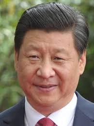

Президент Китаю

Я очолюю Китайську Народну Республіку з 2013 року, впроваджуючи стратегію всебічного розвитку соціалізму з китайською специфікою. Під моїм керівництвом країна досягла стійкого економічного зростання, значного прориву в науці, техніці та боротьбі з бідністю. Моя місія — забезпечити добробут народу, зміцнити позиції Китаю на міжнародній арені та сприяти побудові гармонійного світу.
Вік:71 рік
Місцезнаходження:Пекін, КНР